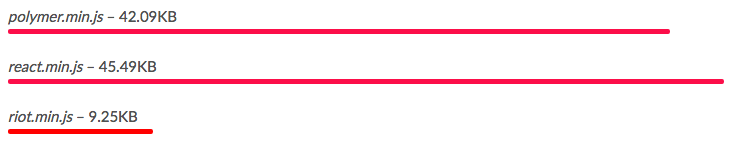
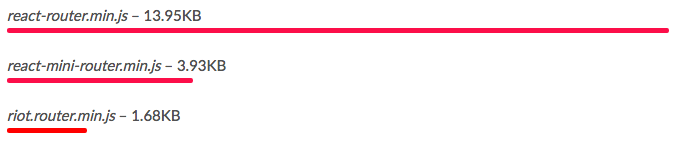

Riot.js
〜SPAを知らない人間がSPAを作ってみた〜
あらすじ
近年、このフロントエンド界隈は『FW戦国時代』と揶揄されるほど数多くのFWが存在しています。
世間的に優れたフロントエンドエンジニアというのはどのFWはどういう特徴で何ができるのかを理解した上で、自分が扱っているプロダクトに適したものを選別できる人間のことをいうそうです。
しかし
全てのFWの概要を知るには学習コストも時間も膨大にかかってしまうという大きなデメリットがあります。
（優れたフロントエンドエンジニアへの道のりは険しいですね…）
そんな、エンジニアたちが疲弊しきっているこの戦乱の世に、あるひとつのFWが『反乱』を起こしました。
それがRiot.jsなのです。

Riot.jsとは
Riot.jsは他のFWと比べると比較的新しいFWです。先ほど軽く説明しましたがRiotの開発者は今の複雑化した数々のFWに対してひとつのシンプルな疑問を持っていました。
『なぜこんなに複雑なんだろう』
と。
※Riot.jsは他のライブラリと比べてAPIが約100倍少ないそうです。
コンポーネント指向
ざっくり説明すると『データ（Model）』、『見た目(View)』、『挙動(Controler)』をひとつのファイルで管理がしてそれをサイト内で使い回すという概念。
最近よく耳にする『仮想DOM』や『SPA』というのもこのコンポーネント指向に紐付く実装方法です。
使い方などの詳細は後で説明しますが、これがコンポーネント指向の一例です。
なんと、普段我々が触っているソースコードそのものじゃないですか。
※最終的にこのコンポーネントはJSにインブラウザ・コンパイルされます。
超軽量ライブラリ
以下の画像は公式サイトから引用してきたものですが、他のライブラリと比較してみると『超軽量』であることがわかります。


学習コストが低い
先ほど画像やテキストでお見せしたように、導入・利用は非常にシンプルです。
とまぁこんなかんじでたったの4ステップで仮想DOMができてしまいます。
素敵ですね！！
jQueryとの親和性が高い
コンポーネント指向が普及してViewのコントロールはView自身が行っている為、最近ではjQueryはいらない子説が出てきています。
とはいえ、偉大なるjQuryを使わず開発をするというのもなんとなく不安ですし、jQueryでしかできない（やりやすい）事も多々あるかと思うのでそう簡単に手放す事もできないという現状があります。
よろしい、ならば使いましょう
※ソースコードタイム
というわけでRiot.jsにもjQueryを使える事が判明しました。
しかし自分の中で一点懸念点があります。
たしかにjQueryは便利ですが、コンポーネント指向で考えた時にカスタムタグの中で定義されたコンポーネントでそこ以外のパーツの操作をしてしまっていいのだろうか。
なんて思ってしまいました。
導入事例
どういうアプリケーションに適しているか
『超軽量』を提唱しているので掲示板とかニュースサイトとか更新頻度も多く、Modelの部分が重くなりがちなサイトにすごく適しているなぁと思いました。